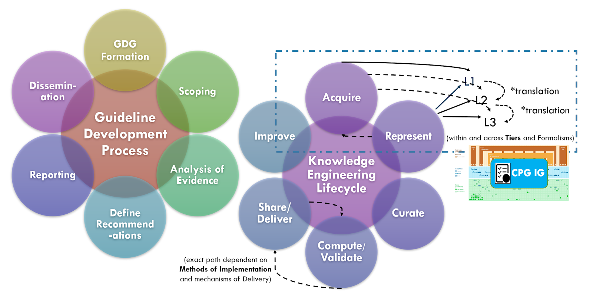

Knowledge acquisition is the process of extracting, understanding, structuring and organizing knowledge from one source, often solely or largely from human/ expert understandable formats, so it can be translated into computer-interpretable (or computer-enabled) formalisms. Knowledge acquisition typically includes one or more of the following sub-activities: knowledge elicitation, knowledge authoring, knowledge synthesis, knowledge discovery (data mining-machine learning DM-ML), and/or hybrid approaches that may include methods, tools, and information gained from a combination of the prior approaches.
Knowledge elicitation is the process of extracting an expert’s tacit knowledge (i.e., expertise and experience) or expert-sourced artifacts (e.g., narrative guidelines) to obtain a more formalizable representation of this knowledge. Techniques may include: expert interviews, ethnographic methodologies (e.g., artifact analysis, shadowing, retrospective cued recall interviews, critical decision method, contextual inquiry, case presentations or reviews, Delphi method [a forecasting process framework based on the results of multiple rounds of questionnaires sent to a panel of experts], concept mapping [a visual diagram that depicts concepts, their attributes, and suggested relationships between them from a domain perspective]).
Knowledge authoring is the process by which a domain expert directly expresses their tacit knowledge into more formalized representations of this knowledge. This is often done using tools such as editors that facilitate the knowledge translation process through business logic affordances and constraints) in the tooling that provide mappings from domain concepts (e.g., expert mental models) to knowledge representations derived from knowledge asset meta-models defined by knowledge architects as well as pre-existing content from an established knowledge base (e.g., ontologies and terminologies).
Knowledge synthesis is a process and set of techniques that evaluates and summarizes all available evidence on a particular topic through comprehensive literature searches and advanced qualitative and quantitative synthesis methods. This is analogous, if not identical to the knowledge synthesis and evidence-based practice communitiy’s evidence analysis approach utilized by the guideline development group as described above. This is an opportunity for many touch points between the guideline development group in the knowledge engineering team.
Knowledge discovery is a process of discovering or learning patterns that lead to actionable knowledge from large data sets. This may be inclusive of various traditional data mining or data exploration approaches and tooling, numerous ML approaches, and/or combinations thereof. It may also be inclusive of various health outcomes research and data science activities and may built upon large curated data sets (e.g., clinical, clinical research, and quality improvement registries; -omics data sets) as well as real-world evidence and metadata or insights from across the evidence ecosystem (e.g., knowledge synthesis outputs, clinical trial metadata). These methods of knowledge acquisition provide affordances and much promise for inputs from various CPG activities (e.g., content formalization and data enrichment expression such as inferred CPG_CaseFeatures) and feedback loops (e.g., eCaseReports).
There is extraordinary value, critical efficiencies, and unique perspectives that can be gleaned from each of these knowledge acquisition approaches. In addition to knowledge gained from combining insights from each of these communities of practice, there are valuable knowledge and gains in efficiency in combining techniques and tooling as well as more discrete fragments of knowledge gained within subactivities across these communities (called transdisciplinary and/or hybrid approaches).
A key tenant of the CPG development process is for the knowledge engineering team to leverage early, often engagement and even integration with guideline development group. This allows the knowledge engineering team to start acquiring knowledge and translating it further upstream in the CPG development process. It further enables feedback and more rapid iteration between the knowledge engineering team and the domain experts in the guideline development group.
A key tenant of the Agile CPG approach describe subsequently, is to further integrate the knowledge engineering team and guideline development group into a nearly singular cross-functional team. Benefits include fewer handoffs and queues, concurrency of work efforts, shorter and more valuable feedback loops, and higher-quality inputs to knowledge acquisition (people and processes versus a paper narrative to be interpreted subsequently to and asynchronously with the guideline development group’s and artifacts). Lastly, but none of least importance is the ability for the guideline development group in the knowledge engineering team to learn together. Additional benefits and work processes are described subsequently.

Knowledge acquisition approaches may further leverage the benefits of working directly with knowledge implementers, not limited to potential representative data sets (e.g de-identified data) to perform early knowledge specification and validation activities (e.g. data elements and terminologies) or even employ knowledge discovery approaches as described above. Even CPGCaseFeature definitions (including inferred) or explicit recommendation semantics may be informed by various local implementation artifacts (e.g. CDS content, local clinical registry data elements and logic, workflow analysis artifacts). For further descriptions, see section on Concurrent Development and Implementation in Knowledge Implementation.